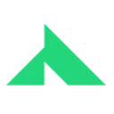

MidjourneyAI-персонажи
Midjourney создаёт изображения по описанию и референсам. Подходит для поиска художественного направления, иллюстраций и визуальных концепций перед детальной доработкой.
Раздел «Генерация и редактирование изображений»: варианты ИИ для этой задачи, описания возможностей и переходы к обзорам.
Подготовьте вариант собственного предметного снимка с другим окружением. Опишите поверхность и свет, а свойства изделия оставьте неизменными; сравните края, пропорции и контактную тень, чтобы оформление не добавляло новых элементов конструкции и не меняло цвет товара.
Помести мою настольную лампу на светлый деревянный стол у спокойной стены. Сохрани форму основания, выключатель и цвет корпуса; согласуй тень с мягким светом слева, новых деталей не добавляй.

Midjourney создаёт изображения по описанию и референсам. Подходит для поиска художественного направления, иллюстраций и визуальных концепций перед детальной доработкой.
«Mindtown» представлен в разделе «Генерация и редактирование изображений». При выборе проверьте нужную операцию и условия работы с результатом.
Сравнивать «MoMoAi» с другими инструментами раздела «Генерация и редактирование изображений» удобнее на одинаковом исходном материале.

Novita AI относится к инструментам, которые помогают писать и изменять программный код. Ещё одно направление работы: связывать действия в автоматизированный процесс.
«Omniinfer» готовит визуальные материалы по заданию.
«Ozziavatars» готовит визуальные материалы по заданию. Дополнительно «Ozziavatars» создаёт портретные и аватарные изображения.
Для «Pet Lens AI» сначала определите свою задачу и требуемый результат. Карточка относится к направлению «Генерация и редактирование изображений».
Сравнивать «Photobooth AI» с другими инструментами раздела «Генерация и редактирование изображений» удобнее на одинаковом исходном материале.
«PhotoEditor.AI (pybrain.org)» помогает исправлять и оформлять фотографии.
«Picaii» готовит визуальные материалы по заданию.
«Pixelhunter» работает с материалами для социальных площадок.
«piXme (pixme.pro)» представлен в разделе «Генерация и редактирование изображений». При выборе проверьте нужную операцию и условия работы с результатом.
«Pixvify» помогает исправлять и оформлять фотографии.
Сравнивать «Promptdle» с другими инструментами раздела «Генерация и редактирование изображений» удобнее на одинаковом исходном материале.
«Remini : AI Photo Enhancer» представлен в разделе «Генерация и редактирование изображений». При выборе проверьте нужную операцию и условия работы с результатом.
Сравнивать «RizzShot» с другими инструментами раздела «Генерация и редактирование изображений» удобнее на одинаковом исходном материале.
Для «Selfarama» сначала определите свою задачу и требуемый результат. Карточка относится к направлению «Генерация и редактирование изображений».
«Smartshoot» представлен в разделе «Генерация и редактирование изображений». При выборе проверьте нужную операцию и условия работы с результатом.
«SnapMyBaby» представлен в разделе «Генерация и редактирование изображений». При выборе проверьте нужную операцию и условия работы с результатом.
Для «Sqriblr : Generate Blog Articles with Images in Seconds with this ChatGPT Add-on» сначала определите свою задачу и требуемый результат. Карточка относится к направлению «Генерация и редактирование изображений».
«Stable Fast 3D by Stability AI» подготавливает трёхмерные объекты.
«Starving Robots AI» представлен в разделе «Редактировать изображение». При выборе проверьте нужную операцию и условия работы с результатом.
Для «StockLibrary.ai» сначала определите свою задачу и требуемый результат. Карточка относится к направлению «Генерация и редактирование изображений».
Сравнивать «Stylar (stylar.com)» с другими инструментами раздела «Генерация и редактирование изображений» удобнее на одинаковом исходном материале.
Для «SVGverseAI» сначала определите свою задачу и требуемый результат. Карточка относится к направлению «Генерация и редактирование изображений».
Для «ThePetPainting.com» сначала определите свою задачу и требуемый результат. Карточка относится к направлению «Генерация и редактирование изображений».
«VideoSnapshot» подготавливает миниатюру для видеопубликации.
«VisionMorpher» помогает исправлять и оформлять фотографии.
Сравнивать «ZoomScape.ai» с другими инструментами раздела «Генерация и редактирование изображений» удобнее на одинаковом исходном материале.
Сравнивать «Age Detector» с другими инструментами раздела «Генерация и редактирование изображений» удобнее на одинаковом исходном материале.
Сравнивать «AI Face Studio» с другими инструментами раздела «Редактировать изображение» удобнее на одинаковом исходном материале.
Для «AI Hairstyle App» сначала определите свою задачу и требуемый результат. Карточка относится к направлению «Генерация и редактирование изображений».
«AI photo restorer» помогает исправлять и оформлять фотографии.
Для «arivis Cloud» сначала определите свою задачу и требуемый результат. Карточка относится к направлению «Генерация и редактирование изображений».
«ARTSMART AI» готовит визуальные материалы по заданию. Дополнительно «ARTSMART AI» работает с материалами для социальных площадок.
«Aux Machina» готовит визуальные материалы по заданию.
«BabyVisageAI» готовит визуальные материалы по заданию.
«BgSub» отделяет объект от фона изображения.
Сравнивать «BharatDiffusion.ai» с другими инструментами раздела «Генерация и редактирование изображений» удобнее на одинаковом исходном материале.
Для «Cascaid» сначала определите свою задачу и требуемый результат. Карточка относится к направлению «Генерация и редактирование изображений».
Для «Cinemashle» сначала определите свою задачу и требуемый результат. Карточка относится к направлению «Генерация и редактирование изображений».
Сравнивать «Clayify» с другими инструментами раздела «Генерация и редактирование изображений» удобнее на одинаковом исходном материале.
«Coderway AI Image Generator» представлен в разделе «Генерация и редактирование изображений». При выборе проверьте нужную операцию и условия работы с результатом.
«Curlyhair AI» представлен в разделе «Генерация и редактирование изображений». При выборе проверьте нужную операцию и условия работы с результатом.
«DALL-E 3 (dalle3.org)» готовит визуальные материалы по заданию.
«DalleCli» готовит визуальные материалы по заданию. «DalleCli» также помогает исправлять и оформлять фотографии.
«Deep Dream Generator» готовит визуальные материалы по заданию.
Для «Destocker» сначала определите свою задачу и требуемый результат. Карточка относится к направлению «Генерация и редактирование изображений».
Страница 2 из 22